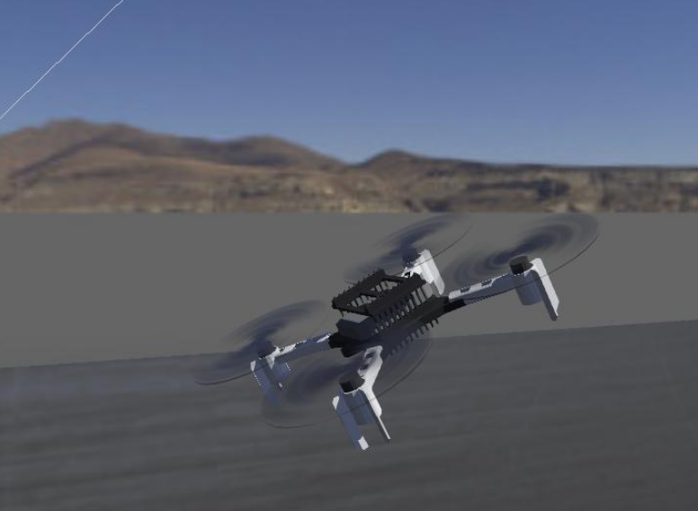
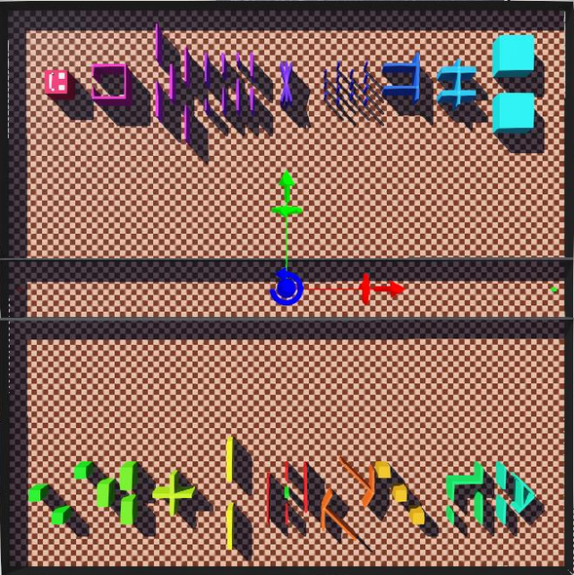

Sabbatical Proposal - Overview
Expanding Capabilities by Learning the Robot Operating System (ROS) for Software Engineering Research
Erik Fredericks, frederer@gvsu.edu


Sabbatical: Fall 2026 - Winter 2027
Why?


| Winter 2026 | Fall 2026 | Winter 2027 |
| --- | --- | --- |
| Pre-planning | OER learning module development | Research project (minimizing uncertainty for ROS-based systems) |
| ROS/Gazebo setup | Conversion of existing project to ROS | Grant writing (NSF SHF Future CoRe, AFRL Foundations of Trusted Systems, US Naval Research Laboratory Basic/Applied Research) |
| Discussions with B. Cheng | OER dissemination | Research dissemination |
OER materials: enable students (either research or in-classroom) to quickly get up and running with robotics simulations
Post-sabbatical
- Develop SE/AI-focused robotics course
- Disseminate remaining work
- Present outcomes to GVSU